CS180 Project 1: Images of the Russian Empire
View the notebook source →%load_ext autoreload
%autoreload 2# Core numerical work
import numpy as np
# Reading and saving images
import skimage.io as skio
# Converting image data types (uint8/uint16 <-> float)
from skimage.util import img_as_float, img_as_ubyte
# Resizing images — for building your pyramid
import skimage.transform as sktr
# Displaying images inline in the notebook
import matplotlib.pyplot as plt
# (Optional) PIL/Pillow — only if you prefer it for I/O.
# from PIL import Image
from pathlib import PathWarm-up: one image, naive stack
Before building anything, let's load a single plate and see what happens if we just stack the channels with no alignment at all.
We first import an image. Since .tif files load as uint16 (0-65535) and .jpg files load as uint8 (0-255), we normalize using img_as_float so our pipeline works for both file types.
im = img_as_float(plt.imread('data/imgs/melons.tif'))We vertically partition each file into three to obtain the color plates. For indexing purposes it's important that height is an integer.
height = np.floor(im.shape[0] / 3.0).astype(int)
b = im[:height]
g = im[height: 2*height]
r = im[2*height: 3*height]Let's have a look at the plates.
plt.imshow(b, cmap='gray')<matplotlib.image.AxesImage at 0x1153f0610>
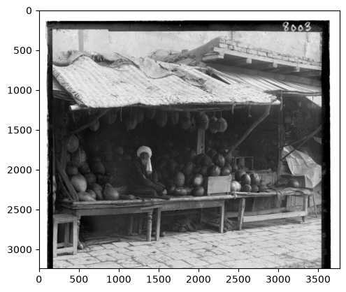
plt.imshow(g, cmap='gray')<matplotlib.image.AxesImage at 0x106d0f5d0>
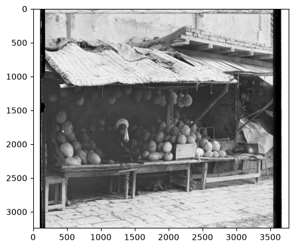
plt.imshow(b, cmap='gray')<matplotlib.image.AxesImage at 0x117bd0f10>

We naively stack the plates, showing what misalignment looks like
combined = np.dstack([r, g, b])
plt.imshow(combined)<matplotlib.image.AxesImage at 0x117c28f50>
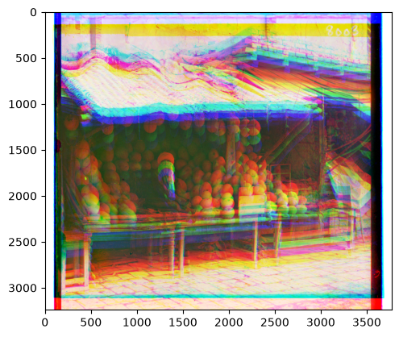
How align.py works
For the sake of modularity, we'll implement the functions in align.py. With L2, the lower the score, the greater the alignment between two images. With NCC it's the reverse: the greater the score, the greater the alignment between two images. To make it easy for our align function to use switch between loss functions, we define neg_ncc, which just returns the negative of what ncc would.
from align import pyramid_align, crop, l2, ncc, neg_nccHow the alignment functions work: crop, single_scale_align, pyramid_align
crop(img, frac=0.1) trims a fixed fraction off each edge before an image is scored against another. The glass-plate scans have a black border/frame around the actual photo, and that border isn't identical between the R, G, and B plates. If we scored the uncropped plates, the loss function would end up rewarding whatever shift best lines up border artifacts rather than the actual scene.
single_scale_align(moving, fixed, window, loss) does brute-force exhaustive search. For every integer displacement (dy, dx) with dy, dx in [-window, window], it shifts moving with np.roll (which wraps pixels around the border) and scores the shifted image against fixed with the chosen loss function, keeping whichever (dy, dx) scores best.
pyramid_align(moving, fixed, ...) is what we need for full-resolution TIFFs. Since exhaustively searching a window wide enough to cover those images' true offsets at full resolution would be too slow, pyramid_align recursively downsamples images by half (sktr.rescale(..., 0.5, anti_aliasing=True)) until the smaller dimension drops below min_size=200. It then does one exhaustive single_scale_align search with a wide window (big=15) at that tiny base resolution, before unwinding one pyramid level at a time: at each level it doubles the offset estimate inherited from the coarser level (since one pixel at half-resolution corresponds to two pixels at full resolution) and refines it with a small exhaustive search (small=3) local to that level. Because each level only needs to correct for the rounding/downsampling error introduced at that step, this stays cheap.
Part 1: Single-scale alignment on the low-resolution JPEGs
Before building the pyramid, we validate our exhaustive-search strategy on its own using single_scale_align directly on the three small JPEGs (cathedral.jpg, monastery.jpg, tobolsk.jpg). We search every integer displacement (dy, dx) in [-15, 15] (961 candidates) and score each with both loss functions.
from align import single_scale_align
def load_plates(img_path):
img = img_as_float(skio.imread(img_path))
height = np.floor(img.shape[0] / 3.0).astype(int)
b = img[:height]
g = img[height: 2*height]
r = img[2*height: 3*height]
return r, g, b
jpg_paths = [Path('data/imgs/cathedral.jpg'), Path('data/imgs/monastery.jpg'), Path('data/imgs/tobolsk.jpg')]
window = 15
single_scale_results = {}
for img_path in jpg_paths:
pr, pg, pb = load_plates(img_path)
single_scale_results[img_path.stem] = {}
fig, ax = plt.subplots(1, 2, figsize=(8, 6))
for i, (lname, loss) in enumerate([('l2', l2), ('neg_ncc', neg_ncc)]):
g_off = single_scale_align(pg, pb, window, loss)
r_off = single_scale_align(pr, pb, window, loss)
color = np.dstack([np.roll(pr, r_off, axis=(0,1)), np.roll(pg, g_off, axis=(0,1)), pb])
single_scale_results[img_path.stem][lname] = (color, g_off, r_off)
print(f'{img_path.stem} [{lname}]: G={g_off} R={r_off}')
ax[i].imshow(color)
ax[i].set_title(f'{img_path.stem} ({lname})')
ax[i].axis('off')
plt.tight_layout()
plt.show()cathedral [l2]: G=(5, 2) R=(12, 3)
cathedral [neg_ncc]: G=(5, 2) R=(12, 3)
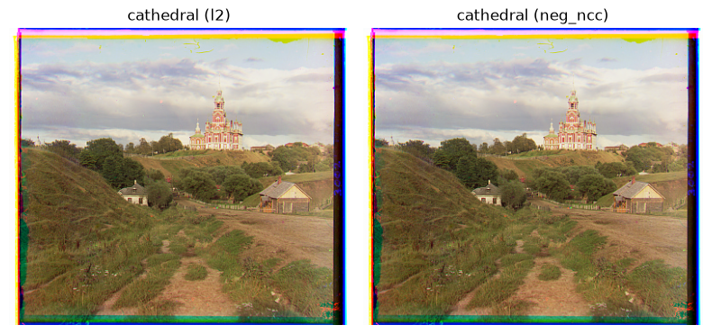
monastery [l2]: G=(-3, 2) R=(3, 2)
monastery [neg_ncc]: G=(-3, 2) R=(3, 2)
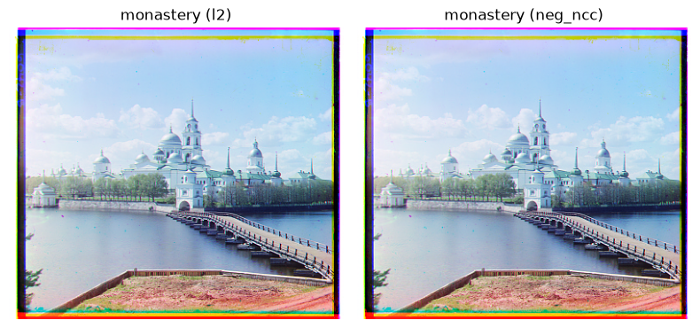
tobolsk [l2]: G=(3, 3) R=(6, 3)
tobolsk [neg_ncc]: G=(3, 3) R=(6, 3)
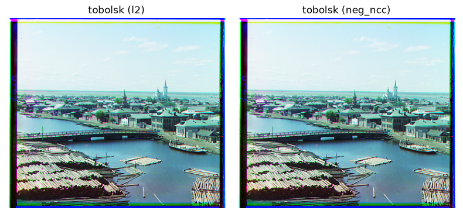
Part 2: Multi-scale pyramid alignment
Now we trypyramid_align on the full-resolution images. Let's see one example first before we try the whole set.
We first try using L2 as the loss function.
g_off = pyramid_align(g, b, loss=l2)
r_off = pyramid_align(r, b, loss=l2)
print('G:', g_off, 'R:', r_off)G: (82, 11) R: (178, 13)
Our align function gives us the "ideal" offset for each plate relative to the blue plate. We pass these offets into np.roll to shift each plate. We then stack the plates on top of each other and display the image.
color = np.dstack([np.roll(r, r_off, axis=(0,1)), np.roll(g, g_off, axis=(0,1)), b])
plt.imshow(color)<matplotlib.image.AxesImage at 0x122da9350>
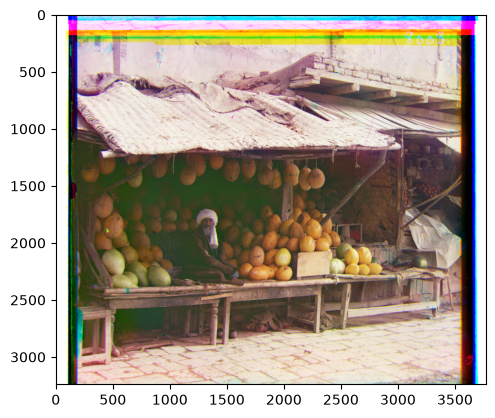
We bundle the various steps into a function to make it easier to see how we do on all the images.
def align(img_path, align_func, loss):
img = img_as_float(skio.imread(img_path))
height = np.floor(img.shape[0] / 3.0).astype(int)
b = img[:height]
g = img[height: 2*height]
r = img[2*height: 3*height]
g_off = align_func(g, b, loss)
r_off = align_func(r, b, loss)
color = np.dstack([np.roll(r, r_off, axis=(0,1)), np.roll(g, g_off, axis=(0,1)), b])
return color, g_off, r_offdef show_grid(paths, align_func, loss, ncols=2):
paths = list(paths)
nrows = -(-len(paths) // ncols)
fig, axes = plt.subplots(nrows, ncols, figsize=(5*ncols, 5*nrows))
axes = np.atleast_1d(axes).flatten()
for ax, img_path in zip(axes, paths):
name = img_path.stem
color, g_off, r_off = align(img_path, align_func, loss)
print(f'{name}: G={g_off} R={r_off}')
ax.imshow(color)
ax.set_title(name)
ax.axis('off')
for ax in axes[len(paths):]:
ax.axis('off')
plt.tight_layout()
plt.show()data_dir = Path('data/imgs')
show_grid(sorted(data_dir.glob('*.jpg')) + sorted(data_dir.glob('*.tif')), pyramid_align, l2)cathedral: G=(5, 2) R=(12, 3) monastery: G=(-3, 2) R=(3, 2) tobolsk: G=(3, 3) R=(6, 3)
church: G=(25, 4) R=(64, 267)
emir: G=(49, 24) R=(103, 57)
harvesters: G=(59, 16) R=(124, 13)
icon: G=(41, 17) R=(90, 23)
ilemselga: G=(39, 7) R=(130, 11)
melons: G=(82, 11) R=(178, 13)
religous_painting: G=(28, 3) R=(68, 7)
self_portrait: G=(79, 29) R=(176, 37)
siren: G=(49, -6) R=(96, -25)
three_generations: G=(53, 14) R=(112, 11)
wharf: G=(15, -7) R=(83, -16)
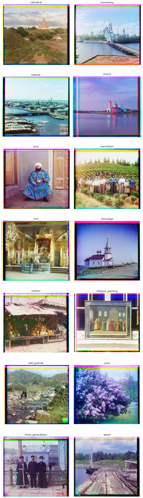
Now we try using ncc as the loss (well, neg_ncc).
show_grid(sorted(data_dir.glob('*.jpg')) + sorted(data_dir.glob('*.tif')), pyramid_align, neg_ncc)cathedral: G=(5, 2) R=(12, 3) monastery: G=(-3, 2) R=(3, 2)
tobolsk: G=(3, 3) R=(6, 3)
church: G=(25, 4) R=(58, -4)
emir: G=(49, 24) R=(416, -455)
harvesters: G=(60, 17) R=(124, 13)
icon: G=(41, 17) R=(89, 23)
ilemselga: G=(40, 7) R=(130, 11)
melons: G=(82, 11) R=(178, 13)
religous_painting: G=(28, 3) R=(68, 7)
self_portrait: G=(79, 29) R=(176, 37)
siren: G=(49, -6) R=(96, -25)
three_generations: G=(53, 14) R=(112, 11)
wharf: G=(15, -7) R=(83, -16)
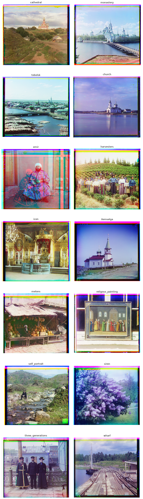
Interstingly, we see that L2 does well for all files except church.tif, whereas NCC performs well for everything besides emir.tif. Why is this?
church.tif is dominated by large flat regions of similar brightness (sky/water). L2 is pulled towards whatever shift that minimizes this disagreement, which isn't necessarily what lines up the church and shoreline best. NCC subtracts the mean and normalizes, so it's invariant to the brightness gap between channels.
As for emir.tif., the emir's robes is a busy, fine pattern that when downsampled aliases into high-frequency noise. Since NCC is a pattern-correlation measure, it's vulnerable to false correlation peaks. L2 survives because the robe is much darker/higher-contrast in R than in B, and in G than in B, so raw-intensity matching has a well-defined true minimum.
Bells & Whistles: Gradient-based alignment
Let's try our best to make one method work everywhere. One way we can do so is to align on edges instead of raw pixels. We define gradient_magnitude and use that to create gradient_pyramid_align. gradient_magnitude creates an edge map — a new image that's bright wherever the original is changing fast (edges, outlines, textures) and dark wherever it's flat.
from align import gradient_magnitude, gradient_pyramid_alignchurch_img = img_as_float(skio.imread('data/imgs/church.tif'))
grad = gradient_magnitude(church_img)
plt.figure(figsize=(8, 20))
plt.imshow(grad, cmap='gray')<matplotlib.image.AxesImage at 0x12300e7d0>
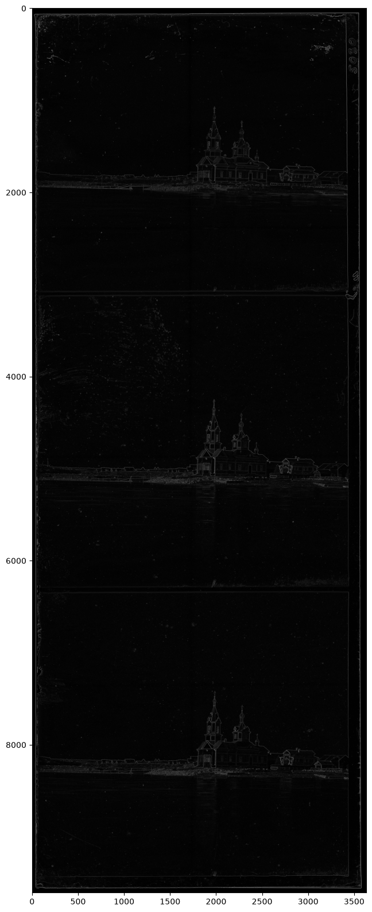
Let's see how our new functions do, using each of the two loss functions. First the results for L2, then NCC.
show_grid(sorted(data_dir.glob('*.jpg')) + sorted(data_dir.glob('*.tif')), gradient_pyramid_align, l2)cathedral: G=(5, 2) R=(12, 3) monastery: G=(-3, 2) R=(3, 2) tobolsk: G=(3, 2) R=(6, 3)
church: G=(25, 4) R=(58, -4)
emir: G=(49, 24) R=(107, 40)
harvesters: G=(60, 17) R=(124, 14)
icon: G=(42, 17) R=(90, 23)
ilemselga: G=(40, 7) R=(131, 11)
melons: G=(80, 10) R=(177, 13)
religous_painting: G=(30, 6) R=(70, 6)
self_portrait: G=(78, 29) R=(175, 37)
siren: G=(49, -6) R=(96, -24)
three_generations: G=(54, 12) R=(111, 9)
wharf: G=(15, -7) R=(83, -16)

show_grid(sorted(data_dir.glob('*.jpg')) + sorted(data_dir.glob('*.tif')), gradient_pyramid_align, neg_ncc)cathedral: G=(5, 2) R=(12, 3) monastery: G=(-3, 2) R=(3, 2)
tobolsk: G=(3, 2) R=(6, 3)
church: G=(25, 4) R=(58, -4)
emir: G=(49, 24) R=(107, 40)
harvesters: G=(60, 17) R=(124, 14)
icon: G=(42, 17) R=(90, 23)
ilemselga: G=(40, 7) R=(131, 11)
melons: G=(80, 10) R=(177, 13)
religous_painting: G=(30, 6) R=(70, 6)
self_portrait: G=(78, 29) R=(175, 37)
siren: G=(49, -6) R=(96, -24)
three_generations: G=(54, 12) R=(111, 9)
wharf: G=(15, -7) R=(83, -16)
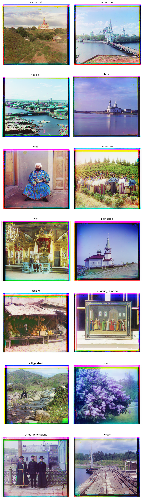
Does aligning on edges fix both failure cases?
Turns out yes. church.tif under L2 now matches NCC exactly — (58, -4) either way, instead of L2's old (64, 267). As for, emir.tif L2 and NCC now agree with each other too, both landing on (107, 40), instead of the old split ((103, 57) vs (416, -455)).
Picking a loss function for the final export
We ran gradient_pyramid_align with both l2 and neg_ncc on all 14 provided images and compared the offsets and runtime (informally). Every image landed on the exact same offset under both losses. But there's a difference in speed: L2 was consistently about 2x faster on the big TIFFs (since NCC also has to ravel, mean-subtract, and normalize at every candidate shift). Since they tie on quality, we go with gradient magnitude + L2 for the final export.
Part 3: Results on self-selected images
We also grabbed 3 glass-negative triple-frame scans from the Library of Congress's Prokudin-Gorskii collection ourselves:
sim_station_view.tif— view from the rear platform at Sim station, Samara-Zlatoust railwaycherdyn_sculpture.tif— a carved wooden Christ figure in the Dormition Church, Cherdynmosque.tif— front view of a crumbling mosque, with a man standing beside it
Same pipeline as above: gradient magnitude + L2, coarse-to-fine pyramid.
self_selected_dir = Path('data/imgs/self_selected')
for img_path in sorted(self_selected_dir.glob('*.tif')):
name = img_path.stem
color, g_off, r_off = align(img_path, gradient_pyramid_align, l2)
print(f'{name}: G={g_off} R={r_off}')
plt.figure(figsize=(5,5))
plt.imshow(color)
plt.title(name)
plt.axis('off')
plt.show()cherdyn_sculpture: G=(69, 25) R=(143, 37)
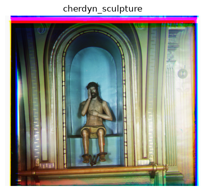
mosque: G=(27, 9) R=(70, 11)
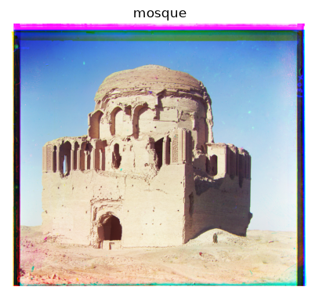
sim_station_view: G=(66, 9) R=(140, 6)
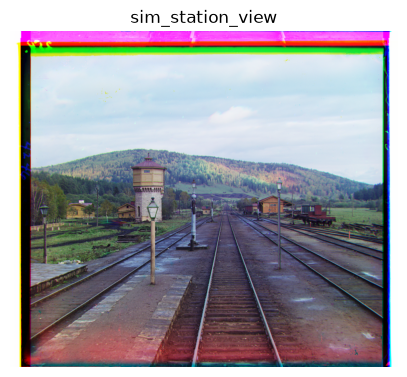
Export
The spec wants outputs saved as JPG. We save each result to output/<name>.jpg, named after the source.
output_dir = Path('output')
output_dir.mkdir(exist_ok=True)
all_paths = sorted(data_dir.glob('*.jpg')) + sorted(data_dir.glob('*.tif')) + sorted(self_selected_dir.glob('*.tif'))
for img_path in all_paths:
name = img_path.stem
out_path = output_dir / f'{name}.jpg'
if out_path.exists():
print(f'{name}: {out_path} already exists, skipping')
continue
color, g_off, r_off = align(img_path, gradient_pyramid_align, l2)
print(f'{name}: G={g_off} R={r_off} -> {out_path}')
skio.imsave(out_path, img_as_ubyte(np.clip(color, 0, 1)))cathedral: output/cathedral.jpg already exists, skipping monastery: output/monastery.jpg already exists, skipping tobolsk: output/tobolsk.jpg already exists, skipping church: output/church.jpg already exists, skipping emir: output/emir.jpg already exists, skipping harvesters: output/harvesters.jpg already exists, skipping icon: output/icon.jpg already exists, skipping ilemselga: output/ilemselga.jpg already exists, skipping melons: output/melons.jpg already exists, skipping religous_painting: output/religous_painting.jpg already exists, skipping self_portrait: output/self_portrait.jpg already exists, skipping siren: output/siren.jpg already exists, skipping three_generations: output/three_generations.jpg already exists, skipping wharf: output/wharf.jpg already exists, skipping cherdyn_sculpture: output/cherdyn_sculpture.jpg already exists, skipping mosque: output/mosque.jpg already exists, skipping sim_station_view: output/sim_station_view.jpg already exists, skipping
Note on AI Usage
Algorithms were written manually. Explanatory notes were drafted manually. I used Claude for help with debugging, structuring the notebook, polishing the writing, creating a webpage from the notebook, documenting align.py, and writing minor helper functions.